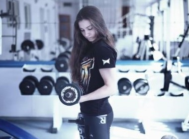
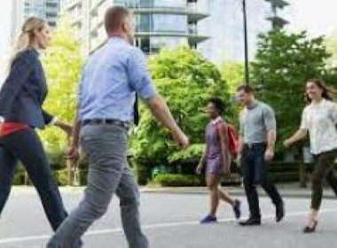
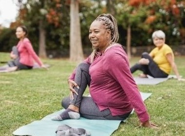
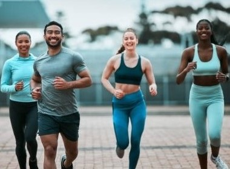
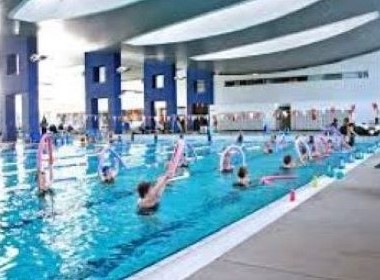

Exercise Getting a Better Life
FunctionalTraining Walking UseStairs
 Some people need time to decide on their favorite physical activity. Still, the important thing is to try different disciplines while we find the ones we are passionate!.
In addition, physical activity oxygenates our cells, which favors the proper functioning of all our organs. Within these functions is the brain, and therefore is related to emotions. It is known that when we do physical activity, we can reduce our stress levels.
Physical activity and healthier habits help us prevent a sedentary lifestyle installed in society. I started driving a car to transport my children more safely and efficiently and stopped walking.
I began to study, and it wasn't easy to organize schedules to meet family, study, social and ecclesiastical responsibilities. But within the priorities, I put physical activity to give necessary time in my schedule. Likewise, if I'm going to do paperwork, I leave the car parked a few blocks away, so I force myself to walk from the car to the building in question. I choose to take the stairs if there are stairs and an elevator. One can decide to make small changes to counter a sedentary lifestyle.
Yoga Relax AquaGym
  In the search for the best physical activity for me, I discovered my love for yoga, the strength of functional gymnastics, and how much exercise can be done in the water.
Also, exercise can be used as a way to socialize; in addition to strengthening our physique, we nurture our emotions. Physical activity can work like medicine, healing our bodies and souls.
The physical activity helped energize me, so I could better organize a time to spend some time on my hobby or relaxing activities without feeling guilty for wasting time. I understood that these helped me widen my mind and strengthen my emotions. I also learned to find time to get together with friends to recreate my mind.
So I learned to listen and to be heard. I also learned to recognize the good and have patience for my not-so-good in life. Without getting sick while getting past that particular stage, life is made up of events we get past, and it is better if we do it healthily!